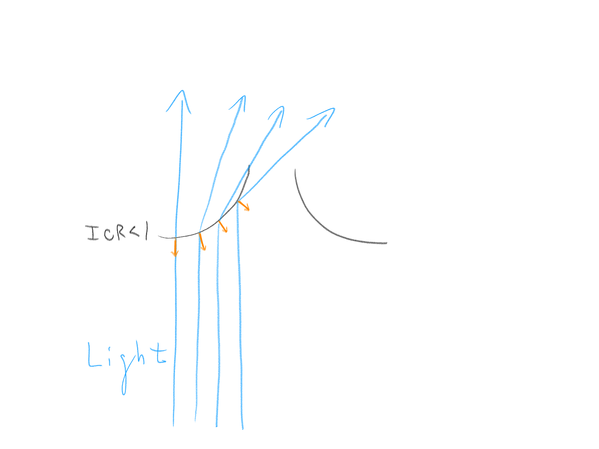

This project was completed as part of a final for the "Black Holes" course at University of Colorado, Boulder taught by Professor Ann-Marie Madigan.
This simulation was created to illustrate the effects of gravitational lensing and how accretion disks behave around a black hole.
As a project for communicating characteristics of black holes and the science behind them, I've attached a brief blurb about black holes and the gravitational lensing effect.
Black holes are quite incredible cosmic objects of various immense sizes, throughout the universe.
These bodies are so massive and dense that the gravitational pull they exert even bends light.
Below whats known as the 'event horizon', light itself is not able to escape due to the immense gravity - which is why black holes appear black.
Beyond the horizon gravity, less, but still very power bends light rays around the black hole producing a lensing effect.
From our perspective the area immediately surrounding the black hole has the most
significant distortion bent along the curvature of its surface. By this effect, we are actually
capable of seeing what is behind the black hole.
For example, the accretion disk which sometimes forms around a black hole is completely visible although part of it would normally be occluded by the black hole.
These accretion disks are also interesting objects, made of highly energetic gas (plasma) and spin like rings around the black hole.
The scale of these disks is variable and not every black hole may have one. However, when they do exist black holes are easy to identify in space.
The lensing effect can also be utilized to identify these bodies, since the way in which black holes bend light will double the luminosity of starts behind them.
Breakdown
I've attached a breakdown here for anyone else looking to create their own supermassive black hole effect.
Black Hole
The first part of this breakdown cover's the actual black hole object.
This object should create seemingly accurate light bending effects, as well as be very very dark in the middle.
I've seen a few approaches to this by other Blender artists, a classmate, a guest lecturer, and an unreal developer.
Needless to say many people enjoy black hole 3D projects.
Most of these approaches all employed ray-tracing techniques, usually by adjusting the direction or velocity of the light ray in small increments.
This is also the approach to dynamic and chaotic systems, which may use Runge-Kutta techniques for extremely precise calculations.
Depending on the platform technology this may involve coding your own tools to some degree.
Blender is capable of bending light rays multiple times, provided that cycles is the selected rendering engine.
However, for my approach I wanted the black hole to be real time performant and use Blender's realtime engine 'Eevee', where light can only be bent or refracted once.
So to recreate the gravitational lensing effect, light could not curve around the hole but instead simply be bent towards the final location.
So that 3D objects in the scene could also appear distorted, Screen Space refractions were enabled.
1
2
SSR enabled in Rendering options
SSR enabled in Material options
Light refracting through glass
To perform light bending in Eevee, a Refraction BSDF shader is used to perform the necessary ray-tracing bounce internally.
For context, when light passes through an object it refracts and is bent near/away from the normal depending on the index of refraction ratio between the mediums the light travels through.
3
Any 3D geometry can be used with the refraction shader. Planes combined with this shader are useful for post-processing filters in some use cases.
For this case, a sphere is used since it looks the same from every angle and black hole's are already sphere like.
4
Geometry of black hole effect
Unfortunately, the normals on the sphere don't initially line up to bend light in the desired direction.
Normals on the edges face away from the viewing angle and cause light to bend a lot - where they should bend a little.
Likewise, the normal in the center is parallel with the viewing angle and barely causes light to bend.
To flip that, the normals need to be recalculated so that they bend light inwards.
If the Index of Refraction is less than 1, that would roughly look like:
5

6
Desired light bending effect
Normal derivation for light bending effect
This was done by rotating the existing normals by 90 degrees inwards towards the center of the sphere from where the camera was looking.
To apply the correct rotation, the normals given in world-space coordinates were transformed to camera space coordinates.
In these coordinates the Z-axis aligns with the forward/out direction.
The cross product of this vector (0,0,1) and the initial normal give the axis for an axis-angle rotation towards the center.
7
8
Desired light bending effect
Normal derivation for light bending effect
Next, well add some customization for how much light gets bent by manipulating the IOR.
A fairly helpful calculation is the angle from the incoming vector.
This can be obtained with a dot product, followed by an arccosine function.
Next with map the range [0, pi/2 (90deg)] to [0, 1] and apply a float curve, followed by an additional map range to the units of our desired IOR.
The lower 'To min' parameter is customizable - although at some point the refracted angle becomes too steep and an inner circle forms; this param changes the radius of that.
Notice below, how the edge of the sphere is now softer with the calculted IOR.
Finally, we add DARKNESS. A simple way of doing this is using the previously calculated angle to determine the distance of a pixel from the center of the circle by using a arctan function.
This is a ratio of [0,1] where 0 = center and 1 = edge. Passed through a less-than functions gives a mask which can be used to mix the refraction shader with a black-diffuse or black-emission shader.
Accretion Disk
The accretion disk is simply a disk with a procedural texture on it.
The first step is to create a rotated space around the center (left) of the sphere (middle).
Then pass in those coordinates to a noise function and masking out high values (right).
Notice, how scene time is used to offset the angle to rotate at so that over time the disk spins.
However, we want the inner disk to spin faster than the outer disk (for physical accuracy).
To do this we must chop up the disk into various layers or rings (like a tree-trunk).
If this was continuous the noise would just get super stretched as it goes inwards. We don't want this.
So we'll spin the rings in the center faster (multiply scene time by large value). Here I made a nodegroup,
to abstract the complex spinning logic seperately.
Unfortunately, by discretizing the disks- it will look choppy and people will know just what we did there (escpecially when its moving).
The fix? Blend. A simple method is to create multiple segments where rings overlap.
This can be done in so many ways, and theres a smart way where you could offset to layers splitting and perform a soft less than
so that the edges of each ring fade off slowly while the same coverage is maintained.
Here, I just overlayed to layers and performed a smooth mimimum on the two.
Next we add color. There are also many ways to do this - but the scene is very simple shape wise.
I find that when the shapes are simple, simple color schemes pair well.
Specially, we'll push this as far as it can go by employing pure red (255,0,0) against black (0,0,0).
These colors have a HUGE contrast, which would not be as bold if you sampled various colors. Less = More.
If you want to see something truly amazing google
red anime.
Notice, how many people have some to the same conclusion on this red-black color scheme.
Here, I drew this from Evangelion which I'd say mastered the color red in their cels.
Next, we'll add a bit extra on the edges before passing this through the comparison operation.
Finally, its a tad violent at the center since stuff is spinning so fast. So, lets shift aroud the noise in the center.
This will change the coordinates we used at the start and use a simple noise texture to offset the center.
<2>Additional Resources
Where this fails, is that the disk doesn't have volume along the Z axis.
To fake this, you create a few layers of disks to add depth and in this situation I employed the technique from
lateasusual's first tutorial.
Their second tutorial
also does a great job touching on refraction.
Finally, a space background is always good for these types of projects. I found a great milky way panorama
here, which can be used as an HDRI.